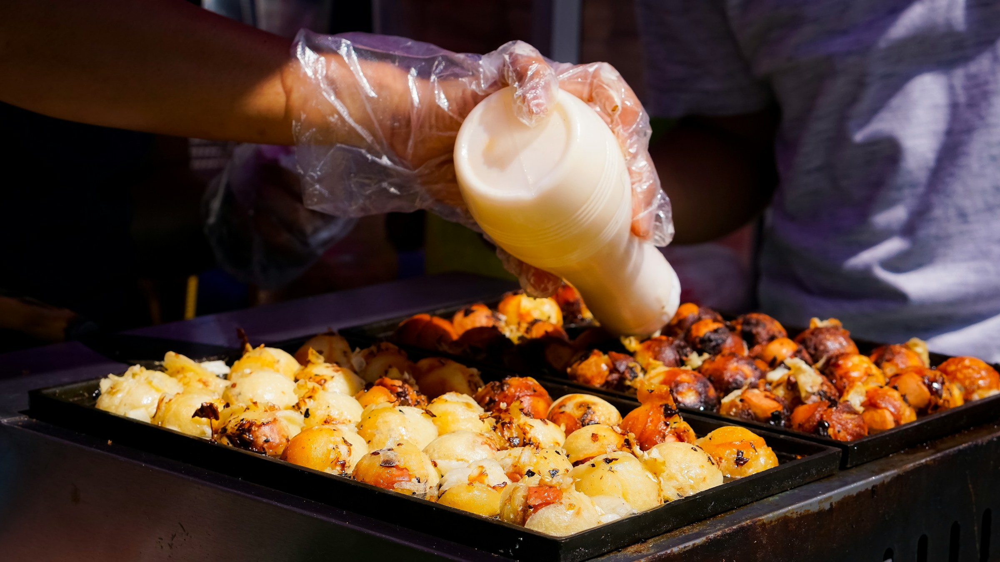

Takoyaki:

Description
Takoyaki is a popular Japanese snack food originating from Osaka.
These are savory, ball-shaped snacks made from a batter of wheat flour, eggs, and dashi (Japanese stock),
filled with small pieces of octopus, green onions, and pickled ginger.
The mixture is poured into a special griddle with half-spherical molds.
As the batter cooks, it's rotated to create a round shape. Once golden brown
and crispy on the outside, takoyaki is typically served hot, topped with takoyaki
sauce (similar to Worcestershire sauce), mayonnaise, dried bonito flakes, and seaweed flakes.
It's a delicious and iconic street food in Japan, enjoyed by many as a snack or appetizer.
Source: ChatGPT
Ingredients:
- Eggs
- Flour
- Dashi Powder
- Soy Sauce
- Octopus/tako
- Green Onions
- Tenkasu
- Takoyaki Sauce
- Kewpie Mayo
- Bonito Flakes
- Seaweed
- Takoyaki Pan
Source: Stepahnie https://iamafoodblog.com/takoyaki-recipe/
Steps:
- Mix. Mix the batter up with a whisk making sure there are no floury bits.
- Prep. Prep all of the fillings. Cut up the octopus, slice the green onions and make
sure you have everything at the ready: a little dish of oil, all your ingredients,
some skewers to flip the balls, and a plate to serve on. Heat up the pan.
- Pour and Fill. Generously oil the pan with a brush or a paper towel dipped in oil.
Give the batter a whisk then pour into the individual compartments all the way up to the top.
It's okay if they overflow a bit. Add in the fillings and let cook until the edges start to look more solid and opaque.
- Flip. Use your skewers to turn the takoyaki 90 degrees. If they don’t easily move, they need more time to crisp up.
Once they're at a 90° angle, pour in a bit more batter to ensure a super round ball. Let cook, stuffing in any excess batter that's
outside the ball, then turn again. You should have a round ball. Cook until the balls are crispy and brown, moving the balls around
from mold to mold to evenly cook (this is because most pans will have uneven heating). As the balls crisp up, it will be easier to flip them.
- Sauce. When the balls are golden and crisp, pop them on a plate and brush with takoyaki sauce and squeeze on some mayo.
- Finish. Finish with a sprinkle of bonito and aonori.
- Most Important. Enjoy!
Source: Stepahnie https://iamafoodblog.com/takoyaki-recipe/